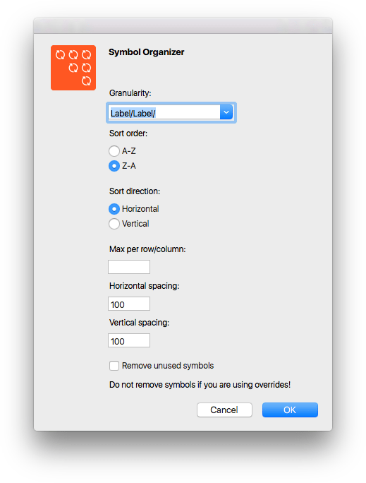
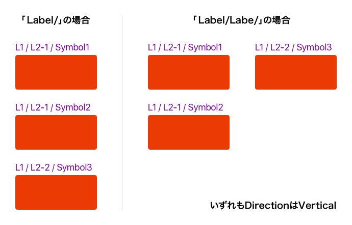

Sketchプラグインを適当に選んで紹介していく、Sketch Plugin Advent Calendar 2016 9日目は、シンボルを整頓できる「Symbol Organizer」です。
シンボルのネストからはじまり、Group ResizingときてInstanceのOverrideが実装され、シンボルの活用なしにSketchは語れないわけですが、そのシンボルがSymbolsページへ整理されず溜まっていくという問題がありました。 このプラグインは、そんな魔境と化したSymbolsページに、光をもたらします（おおげさ）。
使い方ですが、ショートカットCommand ＋ Option ＋ Shift ＋ Oで表示されるダイアログへ、ソートするレベルや順番などを設定して実行しましょう。設定項目については次の通りです。

Granularity
シンボル名に「スラッシュ（/）」を用いることで階層化ができますが、どの階層でグループ化して整列するかを選択します。

ここがちょっと分かりづらいのですが、ひとまずiOS UI Designテンプレートを使って試してみると、どういった動作なのかが理解しやすいでしょう。
Sort order
レイヤーリストで並び替える順番を、レイヤー名の昇順（A-Z）か降順か（Z-A）を選択します。
Sort Direction
アートボードのソートする方向を、水平（Horizontal）または垂直（Vertical）から選択します。
Max per row/column
1列/行あたりのアートボード数を設定ます。入力しなければ、ある分だけ並びます。
Horizontal spacing
アートボード間の水平方向の空きを設定ます。
Vertical spacing
アートボード間の垂直方向の空きを設定ます。
Remove Unused symbols
使っていないシンボルを削除します。
もちろん、最初から整理しておけばよいのですが、何事にもイレギュラーが発生しますからね…ちなみに、単純に並び替えるだけいいよということであれば、Organize Symbolsという単機能なプラグインもあります。
それでは、楽しいSketchライフを。